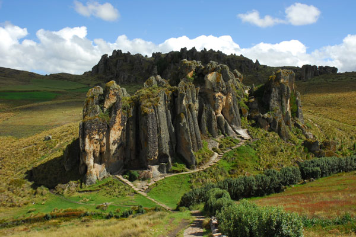
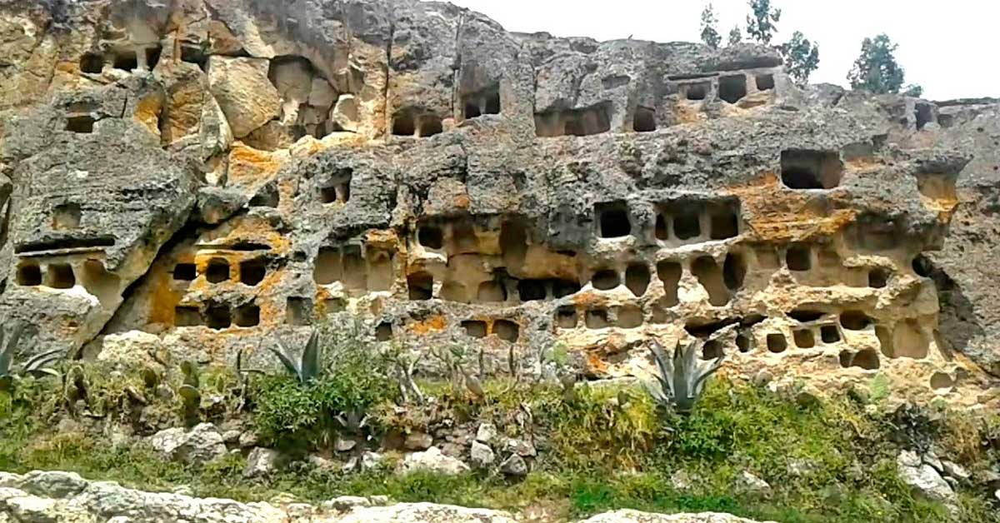
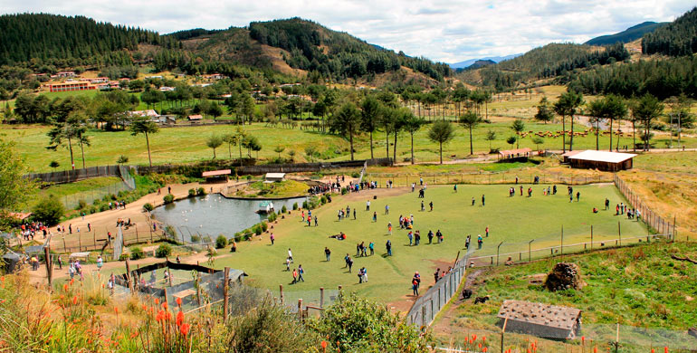
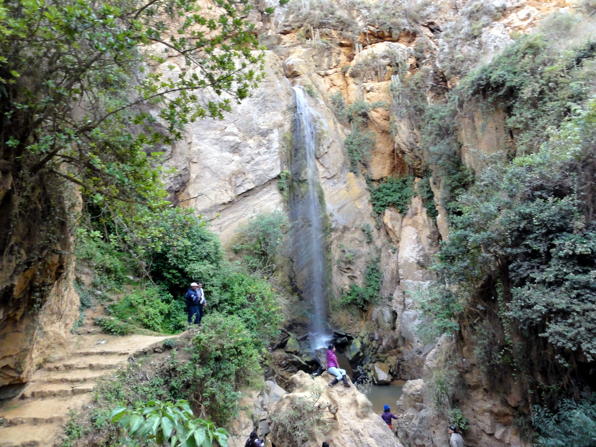

CUMBEMAYO
e encuentran alrededor de 20 km. de la ciudad y 3500 metros de altura. Los Frailones es un bosque de rocas pétreas que dan la impresión de personas en procesión. Además la manera como están erosionadas las rocas, formando cuevas, arcos, elevaciones, abismos, extrañas figuras. A un par de kilómetros se llega al canal prehispánico de Cumbemayo.
Es una obra de ingeniería admirable. El lugar hace recordar a Torre Torre de Huancayo. Camino a Cumbemayo se observaron las minas preincas de Lanzón. La ruta es increíble y maravillosa, en especial para los amantes del ecoturismo y practicar un fuerte trekking con muchas ganas.
SAN APLONIA
Es el Mirador que predomina en toda la ciudad. Se puede acceder por las trescientas escaleras. No obstante, al llegar todo el cansancio queda recompensado por la maravillosa vista que hay en la cima. En el lugar se encuentra la silla del Inca, que deviene de la época preinca. También se encuentra una iglesia muy interesant

VENTANILLAS DE OTUZCO
Se encuentra a 8km. de la ciudad de cajamarca. Las Ventanillas de Otuzco son uno de los ejemplos más maravillosos de necrópolis prehispánicas peruanas. Sobre la pared de roca están labradas varios nichos funerarios cuadrangulares.
La mayor parte está vacío, muchas de ellas fueron saqueadas por huaqueros o buscadores de oro. Son construcciones semejantes a unas ventanas y de ahí proviene el nombre que se le atribuyó. Actualmente se encuentra protegida y conservada por el Instituto Nacional de Cultura de Cajamarca.
BAÑOS DEL INCA
Los baños termales del Inca está situado a 6 km. de la ciudad. El lugar es considerado la capital de los baños termales del Perú. Por tener la primera fuente que se cita en la historia. El alto contenido de minerales de las aguas que afloran de los perolitos de alrededor de 75ºC presenta propiedades curativas que atraen a los viajeros desde tiempos prehispánicos.
Cuenta la historia que a la llegada de Pizarro, Atahualpa se encontraba en ese lugar (antes Pultumarca). Actualmente hay servicios de pozas individuales, piscina y sauna. Además se encuentra la poza del Inca, donde se bañaba Atahualpa, ¿increíble, no?

GRANJA PORCON
La Granja Porcón, un ejemplo exitoso de cooperativa comunal, está en el corazón de Cajamarca. Allí, sus emprendedores decidieron compartir tardes de cabalgatas y apacibles caminatas con viajeros amantes de la vida del campo, del cuidado de la tierra y del amor por lo natural.
LLACANORA
Las cascadas de Llacanora están ubicadas al este del distrito de Llacanora, entre los sectores Santa Polonia y la Paccha Cucho, con distancias aproximadas de 740 metros (cascada macho) 650 metros (cascada hembra) entre 15 y 10 minutos, respectivamente, de la plaza principal del distrito. Sus aguas son provenientes de la Quebrada Shaullomayo
